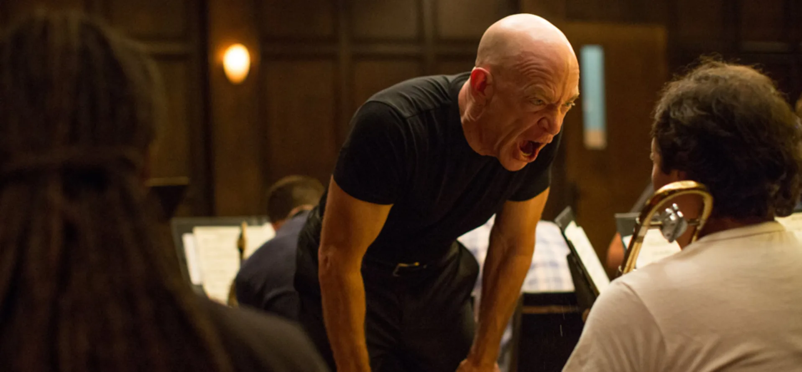

MAIN CHARACTERS
- Andrew Neiman – A talented jazz drummer with a fierce drive to be the best.
- Terence Fletcher – A demanding and sometimes cruel jazz instructor who pushes his students to extremes.
- Nicole – Andrew’s supportive love interest who helps ground him.
- Jim Neiman – Andrew’s father, offering guidance and concern for his son’s well-being.